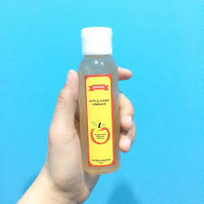

Potential of hydrogen atau pH adalah kadar derajat keasaman yang digunakan untuk menyatakan tingkat keasaman atau kebasaan dari segala hal, salah satunya adalah kulit. Kadar pH sendiri memiliki besaran angka 1-14 dan dipengaruhi oleh sebum yang dihasilkan oleh kelenjar sebaceous untuk menjaga kelembapan dan elastisitas.
Pada kulit normal yang biasanya memiliki sekresi sebum seimbang, pH kulit wajah berada pada angka 5.5. Sedangkan pada kulit berminyak, cenderung lebih asam sehingga pH lebih rendah yang sering kali dimiliki oleh pemilik kulit berjerawat dan mudah teriritasi.
Cara Membuat pH Kulit Kembali Seimbang :
Seperti yang telah dijelaskan di atas, kulit normal memiliki kadar pH 5.5. Sementara untuk kebanyakan produk sabun dan kosmetik memiliki pH 8-10. Menggunakan sabun dan kosmetik secara rutin pasti berpengaruh pada keseimbangan pH kulit. Untuk mengatasinya, Anda harus selektif dalam memilih produk skincare. Perlu diketahui, menjaga keseimbangan pH kulit akan membantu menghindari kulit dari masalah, misalnya kulit kering dan jerawat. Berikut ini cara mengetahui menyeimbangkan pH kulit wajah.
-Apel Cider Vineger (Cuka Apel)

Apa Itu Cuka Apel?
Cuka apel mengandung komponen antioksidan dan antibakteri yang cukup tinggi. Dari sinilah orang-orang mulai menggunakan cuka apel sebagai salah satu cara perawatan wajah alami. Salah satunya sebagai obat jerawat.
Manfaat cuka apel sebagai obat jerawat khususnya datang dari kombinasi kandungan asam asetat, sitrat, laktat, dan suksinatnya yang sudah terbukti oleh banyak studi ilmiah berbeda dapat membunuh bakteri penyebab jerawat.